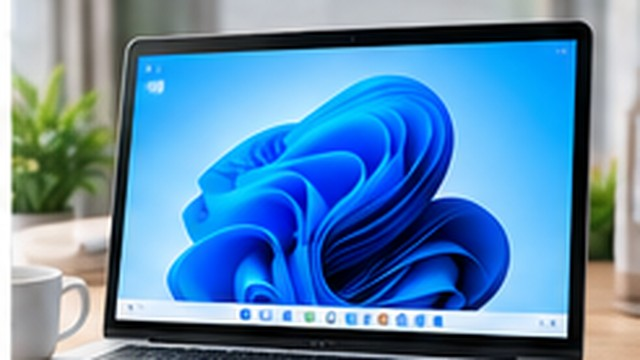
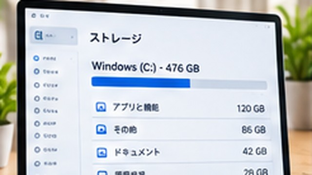
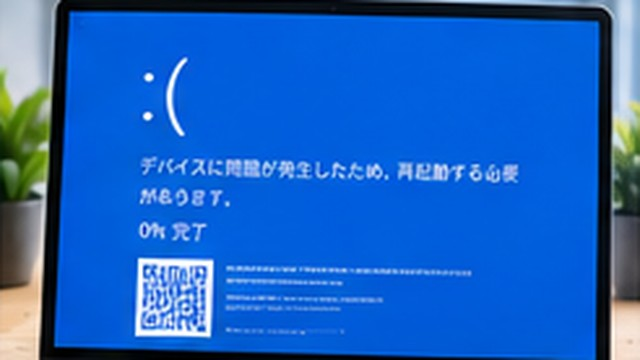
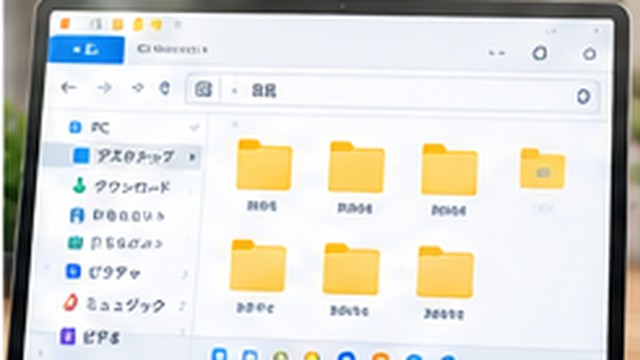
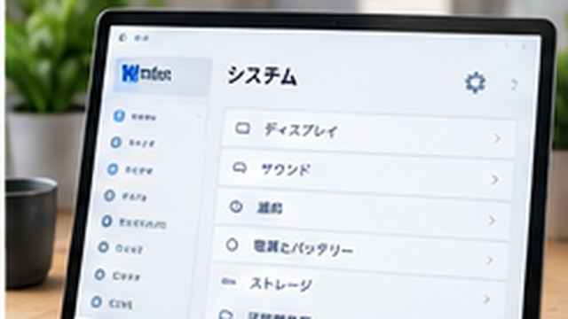

PC・Windows
Windowsで画面の一部だけスクショする方法｜範囲指定してコピー・保存する手順
Windows 11・Windows 10で画面の一部だけを範囲指定してスクリーンショットし、貼り付けたり画像ファイルに保存したりする方法を解説します。

Windows 11・Windows 10で画面の一部だけを範囲指定してスクリーンショットし、貼り付けたり画像ファイルに保存したりする方法を解説します。


エクスプローラーだけ開けない場合に、起動方法の確認、プロセスの再起動、Windows Updateを順番に試す手順を紹介します。
Wi-Fiに接続できない場合と接続済みでもインターネットが使えない場合を分け、PCとルーターを確認する手順を解説します。
Windows 11で動作が遅い、フリーズする、音が出ない、Wi-Fiにつながらないときの確認順と個別の対処法をまとめます。

Windows 11で誤って削除したファイルを、ごみ箱、OneDrive、ファイル履歴から探して復元する手順と、完全削除後の注意点を解説します。
Windows 11のエクスプローラーで複数ファイルを選び、共通の名前と連番に一括変更する方法を解説します。Windows 10での操作も紹介します。
Windows 11でファイル名の一部から探す方法を、エクスプローラー・タスクバー検索・更新日時の確認に分けて解説します。Windows 10にも対応します。
Windows 11の標準機能で複数のファイルをZIPにまとめる方法と、受け取ったZIPを展開する方法を解説します。Windows 10での操作も紹介します。
Windows 11のエクスプローラーでファイル名の拡張子を表示する手順と、Windows 10での設定方法、名前変更時の注意点を解説します。
Windows 11のファイル操作で迷いやすい拡張子、ZIP、検索、一括リネーム、削除ファイルの復元を目的別に案内します。

Windows 11でタスクバーの検索やウィジェットを整理し、アイコンの配置やアプリのピン留めを変更する方法を解説します。Windows 10の設定も紹介します。
Windows 11でサインイン時に自動起動するアプリを確認し、不要なものを無効にする方法をWindows 10の手順とあわせて解説します。
Windows 11で画面が消えるまでの時間とPCがスリープするまでの時間を変更する方法を、ノートPCの電源別設定やWindows 10の手順とあわせて解説します。
Windows 11の既定のブラウザー、スリープ、通知、スタートアップ、タスクバーの設定を、目的別の手順記事とあわせて紹介します。
Windows 11とWindows 10で使える便利なショートカットキーを、基本操作・ウィンドウ切り替え・画面操作に分けて紹介します。
Windows 11のSnipping ToolやXbox Game Barで画面を録画する手順と、Windows 10での方法、録画できないときの確認点を解説します。
Windows 11でMicrosoft Storeや公式サイトからアプリを入れる方法と、不要になったアプリを削除する手順を解説します。
Windows 11でアプリや設定を探す方法、ウィンドウの切り替え、ファイルのコピー・移動など、最初に覚えたい基本操作をまとめます。